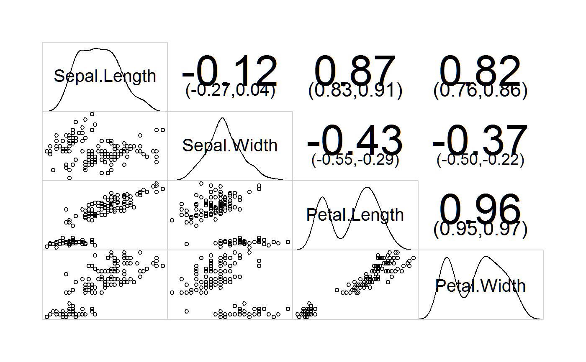
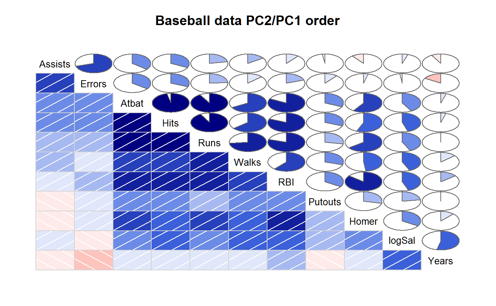
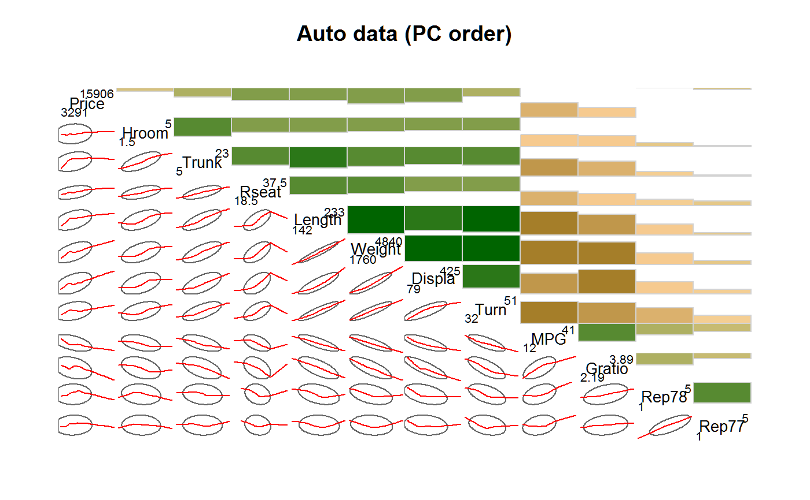
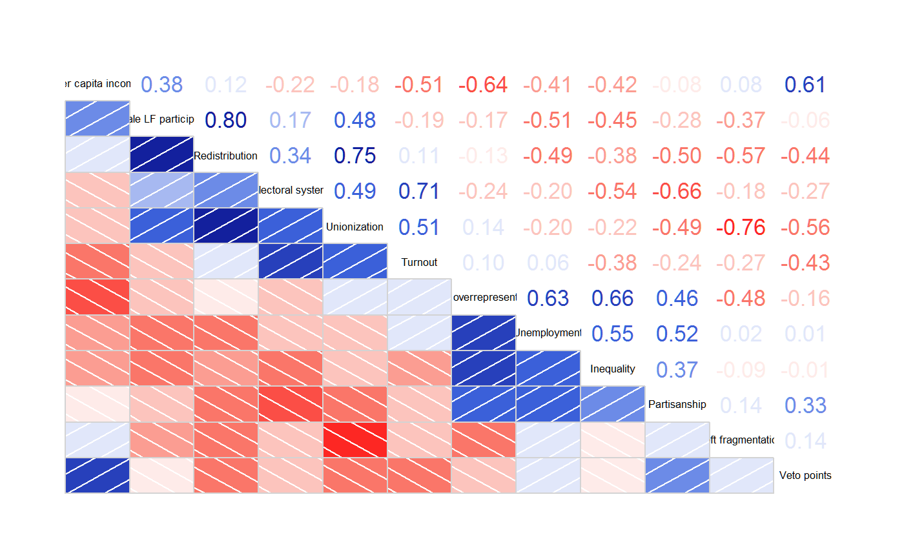
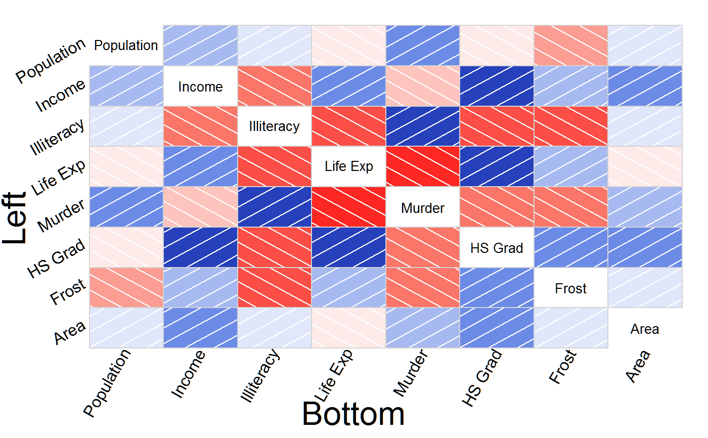

corrgram.RdThe corrgram function produces a graphical display of a correlation matrix, called a correlogram. The cells of the matrix can be shaded or colored to show the correlation value.
corrgram(x, type = NULL, order = FALSE, labels, panel = panel.shade, lower.panel = panel, upper.panel = panel, diag.panel = NULL, text.panel = textPanel, label.pos = c(0.5, 0.5), label.srt = 0, cex.labels = NULL, font.labels = 1, row1attop = TRUE, dir = "", gap = 0, abs = FALSE, col.regions = colorRampPalette(c("red", "salmon", "white", "royalblue", "navy")), cor.method = "pearson", outer.labels = NULL, ...)
| x | A tall data frame with one observation per row, or a correlation matrix. |
|---|---|
| type | Use 'data' or 'cor'/'corr' to explicitly specify that 'x' is data or a correlation matrix. Rarely needed. |
| order | Should variables be re-ordered? Use TRUE or "PCA" for PCA-based re-ordering. If the 'seriation' package is loaded, this can also be set to "OLO" for optimal leaf ordering, "GW", and "HC". |
| labels | Labels to use (instead of data frame variable names) for diagonal panels. If 'order' option is used, this vector of labels will be also be appropriately reordered by the function. |
| panel | Function used to plot the contents of each panel. |
| lower.panel, upper.panel | Separate panel functions used below/above the diagonal. |
| diag.panel, text.panel | Panel function used on the diagonal. |
| label.pos | Horizontal and vertical placement of label in diagonal panels. |
| label.srt | String rotation for diagonal labels. |
| cex.labels, font.labels | Graphics parameter for diagonal panels. |
| row1attop | TRUE for diagonal like " \ ", FALSE for diagonal like " / ". |
| dir | Use |
| gap | Distance between panels. |
| abs | Use absolute value of correlations for clustering? Default FALSE. |
| col.regions | A function returning a vector of colors. |
| cor.method | Correlation method to use in panel functions. Default is 'pearson'. Alternatives: 'spearman', 'kendall'. |
| outer.labels | A list of the form 'list(bottom,left,top,right)'. If 'bottom=TRUE' (for example), variable labels are added along the bottom outside edge. For more control, use 'bottom=list(labels,cex,srt,adj)', where 'labels' is a vector of variable labels, 'cex' affects the size, 'srt' affects the rotation, and 'adj' affects the adjustment of the labels. Defaults: 'labels' uses column names; cex=1'; 'srt=90' (bottom/top), 'srt=0' (left/right); 'adj=1' (bottom/left), 'adj=0' (top/right). |
| ... | Additional arguments passed to plotting methods. |
The correlation matrix used for plotting is returned. The 'order' and 'abs' arguments affect the returned value.
Note: Use the 'col.regions' argument to specify colors.
Non-numeric columns in the data will be ignored.
The off-diagonal panels are specified with panel.pts,
panel.pie, panel.shade, panel.fill, `panel.bar,
panel.ellipse, panel.conf. panel.cor.
Diagonal panels are specified with panel.txt, panel.minmax,
panel.density.
Use a NULL panel to omit drawing the panel.
This function is basically a modification of the pairs.default
function with the use of customized panel functions.
The panel.conf function uses cor.test and calculates pearson
correlations. Confidence intervals are not available in cor.test for
other methods (kendall, spearman).
You can create your own panel functions by starting with one of the included
panel functions and making suitable modifications. Note that because of the
way the panel functions are called inside the main function, your custom
panel function must include the arguments shown in the panel.pts
function, even if the custom panel function does not use those arguments!
TODO: legend, grid graphics version.
Friendly, Michael. 2002. Corrgrams: Exploratory Displays for Correlation Matrices. The American Statistician, 56, 316--324. http://datavis.ca/papers/corrgram.pdf
D. J. Murdoch and E. D. Chow. 1996. A Graphical Display of Large Correlation Matrices. The American Statistician, 50, 178-180.
# To reproduce the figures in Michael Friendly's paper, see the # vignette, or see the file 'friendly.r' in this package's # test directory. # Demonstrate density panel, correlation confidence panel corrgram(iris, lower.panel=panel.pts, upper.panel=panel.conf, diag.panel=panel.density)# Demonstrate panel.shade, panel.pie, principal component ordering vars2 <- c("Assists","Atbat","Errors","Hits","Homer","logSal", "Putouts","RBI","Runs","Walks","Years") corrgram(baseball[vars2], order=TRUE, main="Baseball data PC2/PC1 order", lower.panel=panel.shade, upper.panel=panel.pie)# CAUTION: The latticeExtra package also has a 'panel.ellipse' function # that clashes with the same-named function in corrgram. In order to use # the right one, the example below uses 'lower.panel=corrgram::panel.ellipse'. # If you do not have latticeExtra loaded, you can just use # 'lower.panel=panel.ellipse'. # Demonstrate panel.bar, panel.ellipse, panel.minmax, col.regions corrgram(auto, order=TRUE, main="Auto data (PC order)", lower.panel=corrgram::panel.ellipse, upper.panel=panel.bar, diag.panel=panel.minmax, col.regions=colorRampPalette(c("darkgoldenrod4", "burlywood1", "darkkhaki", "darkgreen")))# 'vote' is a correlation matrix, not a data frame corrgram(vote, order=TRUE, upper.panel=panel.cor)# outer labels, all options, larger margins, xlab, ylab labs=colnames(state.x77) corrgram(state.x77, oma=c(7, 7, 2, 2), outer.labels=list(bottom=list(labels=labs,cex=1.5,srt=60), left=list(labels=labs,cex=1.5,srt=30,adj=c(1,0))))